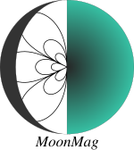

MoonMag

Magnetic induction calculations and analysis for sounding of icy moons
Written in Python 3.8 as supplemental material for “An analytic solution for evaluating the magnetic field induced from an arbitrary, asymmetric ocean world” DOI: 10.1016/j.icarus.2021.114840. For help, please contact M. Styczinski at itsmoosh@gmail.com.
The main repository is mirrored at https://github.com/NASA-Planetary-Science/MoonMag; any pull requests should be submitted to https://github.com/itsmoosh/MoonMag. Read the software documentation at https://itsmoosh.github.io/MoonMag.
Acknowledging MoonMag
Thank you for your interest in MoonMag! Please consider alerting us to your work (marshall.styczinski@bmsis.org). Suggested acknowledgement in publications: “Data used in this work were generated with the open source MoonMag framework hosted on GitHub.”
Quick start
Run the file
runMoonMag.pyusing a Python 3 interpreter.
You will need the following Python modules:
numpy
matplotlib
mpmath
scipy A working version of LaTeX is needed for optimal plot rendering. If you have LaTeX installed, toggle it on by setting
use_latex = Trueinconfig.py.
Parallelization is done through the multiprocessing builtin module, and does not function consistently on all systems. If you encounter errors, try to set do_parallel = False in config.py.
Optional – for trajectory analysis, you will need:
The spiceypy Python module, installed using conda install -c conda-forge spiceypy
Generic and SPK SPICE kernels available from NAIF. See trajec_analysis.py for the expected kernels.
Trajectory measurement files in System III or moon-specific IAU coordinates. Run trajectory analysis routines with
python trajec_analysis.py. Note that this feature is a work in progress.
To generate contour plots showing the asymmetric layer geometry, you will need to edit line 23 in run_all.py. These plots take a long time to generate, so they are turned off by default. Animations are set to plot differences in the magnitudes by default. Change this by setting gif_comp = "x", "y", or "z" at line 19 in the same file.
Configuration
Run settings are split between run_all.py, config.py, eval_induced_field.py, and plotting_funcs.py.
run_all.py: Set which bodies to run, whether to plot animation frames, etc.config.py: Set plot resolutions, precision for calculations, altitudes for magnetic field maps, date/time for evaluation, etc. A toggle for printing induced moments in the Schmidt normalization is also found here.eval_induced_field.py: Set body radii, maximum shape harmonic degree p, and other normalizations.plotting_funcs.py: Plot labels, image types, and contour/colormap settings are found within individual plotting functions.
Editing interior models
Interior models are generated using PlanetProfile. The specific PlanetProfile run files (called PP<Body>_asymmetry.m) used to create the interior conductivity profiles used in this work are contained in the interior/PP_models/ directory. A modified version of the main PlanetProfile function is contained in interior/PP_models/PlanetProfile_snapshot.m. A future version of PlanetProfile will incorporate the changes contained in this file, which are primarily to interpolate the detailed ocean conductivity profile down to just 3 layers (and condense nonconducting layers).
To create a conductivity profile, run a PP<Body>_asymmetry.m file from the appropriate (<Body>/) directory in your PlanetProfile installation, with PlanetProfile_snapshot.m replacing the main PlanetProfile.m file. Then, edit the final value in each row of the printed file interior_model_asym_<Body>.txt to match the desired asymmetry. These values are εl/r̅l as discussed in Section 4.1.2 of the paper. Last, move the edited file to the interior/ directory here.
Creating asymmetric shape files
Collect real-valued, 4π-normalized harmonic coefficients into a single file in interior/ named
depth_chi_pq_shape_<Body>.txt.See the corresponding file for Miranda for an example. These values are assumed to be layer thicknesses, i.e. depths from the surface to the top of an ocean.
The default settings in
eval_induced_field.pyapply these coefficients to the layer with indexr_io, which is negative. For bodies with no ionosphere, typicallyr_iois -2, the second-to-top layer.
In config.py, set
relative = Falseandconvert_depth_to_chipq = Trueand run a field calculation (e.g.python run_all.pyat the terminal). This prints a new file,interior/chi_pq_<Body>.txt.The results of this calculation will only apply asymmetry to the layer corresponding to
r_io.
Open the new file and the corresponding
interior_model_asym_<Body>.txtfile. For each concentric ocean layer, set the εl/r̅l values to be the bcdev value reported at the end of the header line ofchi_pq_<Body>.txtdivided by the radius of the layer corresponding tor_io.For example, for Miranda
bcdev = 39120.39 mandr_io = -3as it has an ionosphere. The radius of that boundary is 185989.764 m, so the εl/r̅l value to use is 39120.39 / 185989.764 = 0.21. Each layer should have the same value here if they are concentric–the absolute asymmetry is scaled to the radius of the boundary.
For each degree p up to the desired pmax, create a file in
interior/nameddegree<p>_shapes_<Body>.txtand add a single descriptive header line to each.See the corresponding Miranda files for examples.
Copy the lines of the
chi_pq_<Body>.txtfile for each harmonic multiple times into the correspondingdegree<p>_shapesfiles, with one line for each layer ininterior_model_asym_<Body>.txt.If desired, these coefficients (the χlpq values) may be adjusted to specify asymmetric layers independently.
In
config.py, setrelative = True. Executingrun_all.pywill now use the values indegree<p>_shapesandinterior_model_asymfiles to set the asymmetry for each layer.